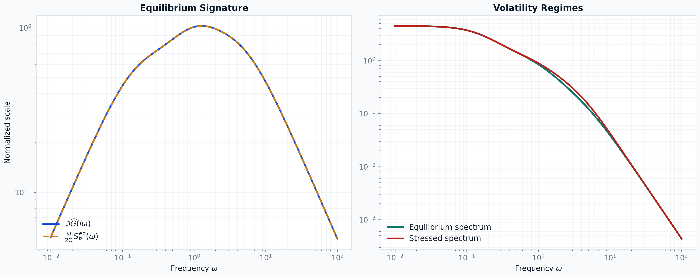
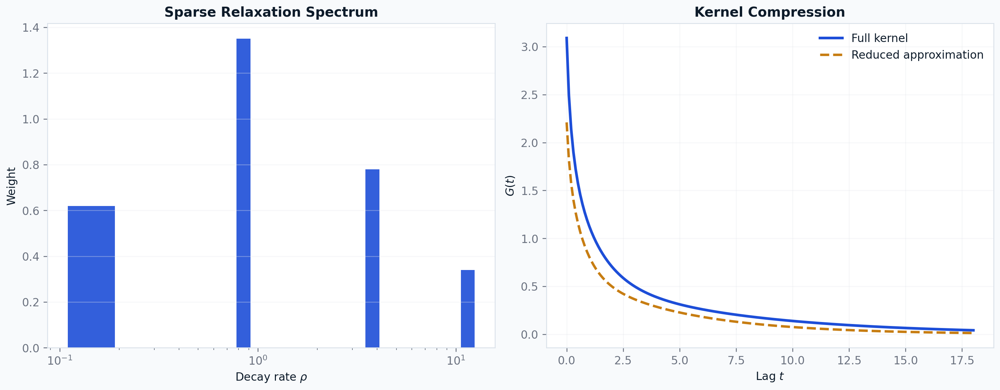
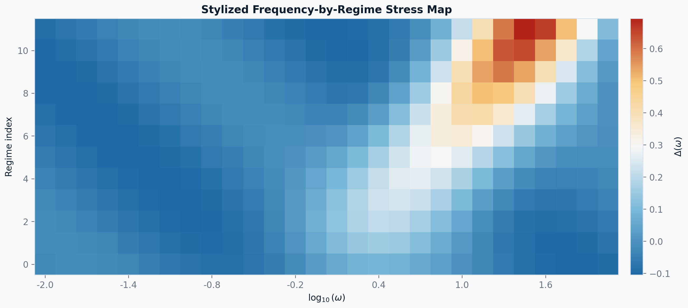
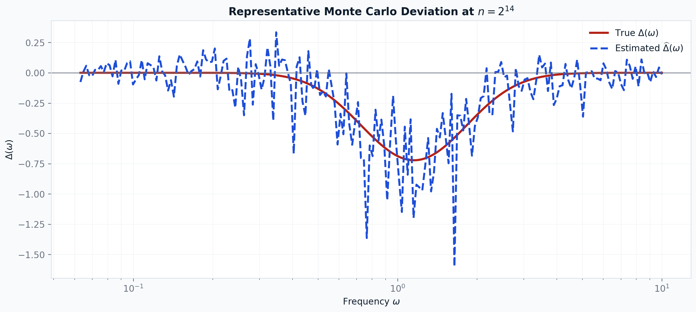
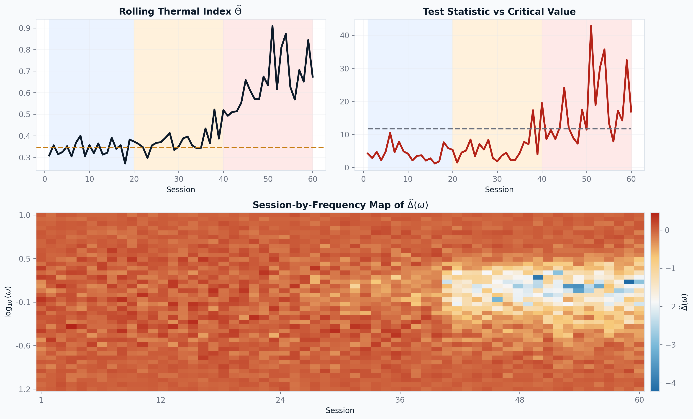
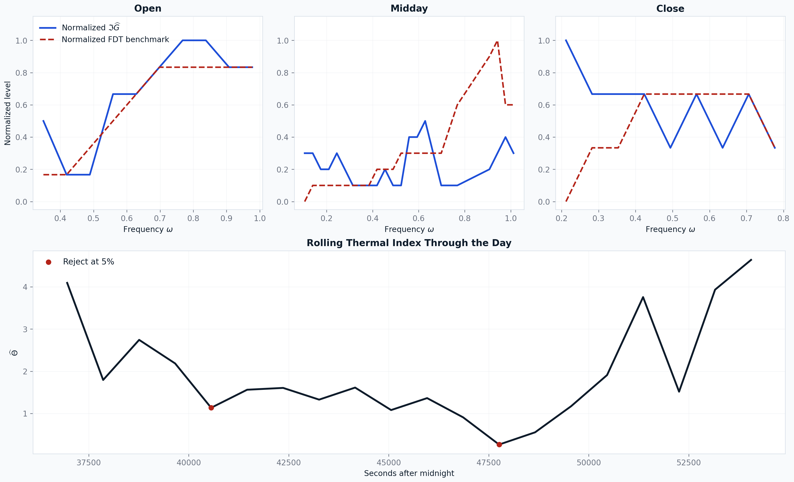
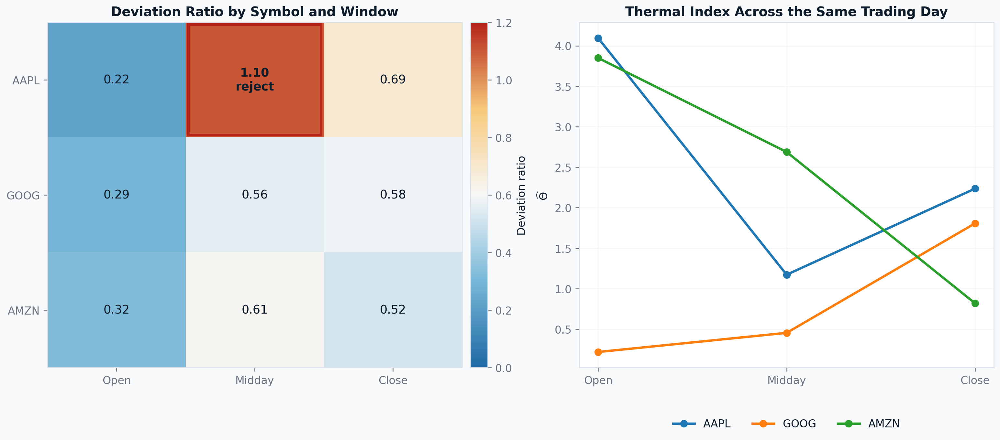
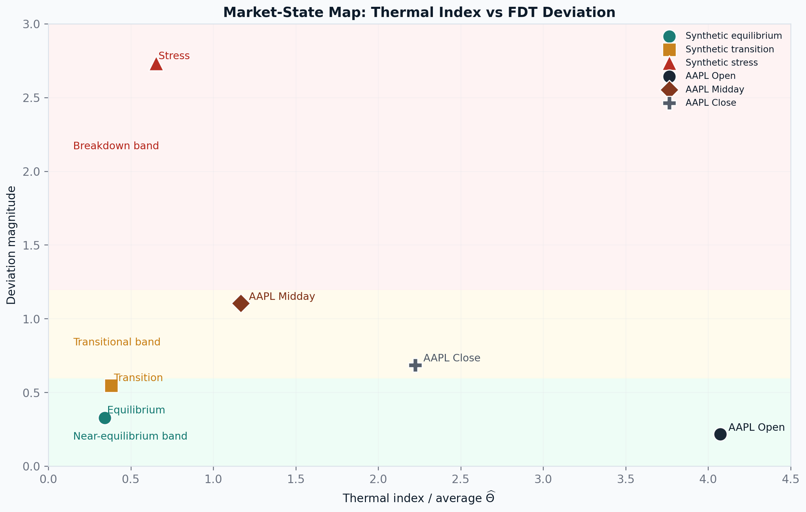

FDT Figure Preview
Direct preview of the manuscript figures while the LaTeX PDF remains uncompiled on this machine.
Figure 2. Equilibrium FDT Signature
The equilibrium benchmark overlays the impact-side dissipation curve with the volatility-side spectral response.

Figure 3. Relaxation Spectrum and Kernel Compression
The left panel shows a sparse relaxation spectrum, and the right panel shows the resulting kernel against a reduced approximation.

Figure 4. Stylized Frequency-by-Regime Stress Map
Blue regions are close to equilibrium, while warm regions indicate frequency bands with elevated deviation from the FDT benchmark.

Figure 5. Representative Monte Carlo Deviation Plot
A representative alternative draw at n = 2^14, comparing the true deviation profile with the estimated one.

Figure 6. Rolling-Window Operational Validation
The top row shows the rolling thermal index and test statistic across 60 sessions, while the bottom panel shows how stress concentrates in frequency space as the stressed regime intensifies.

Figure 7. AAPL LOBSTER Empirical Evidence
The top row compares the normalized dissipation curve with the normalized FDT benchmark in the open, midday, and close windows. The bottom panel tracks the rolling thermal index through the day and marks windows where the bootstrap test rejects.

Figure 8. Real-Data Cross-Section Breakdown
A compact same-date result: only AAPL exhibits a midday rejection, while GOOG and AMZN show thermal variation without a corresponding equilibrium break.

Figure 9. Market-State Map
Synthetic equilibrium, transition, and stress regimes are plotted in the same space as the real AAPL windows, using thermal index on one axis and deviation magnitude on the other.
